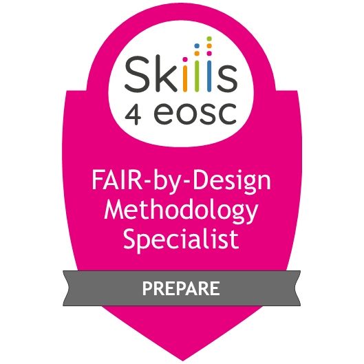
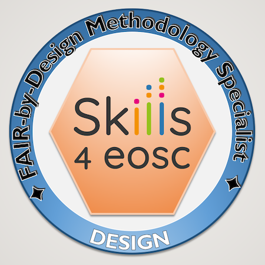
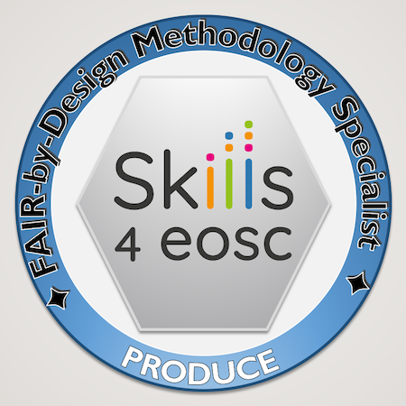
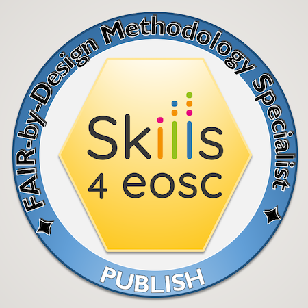
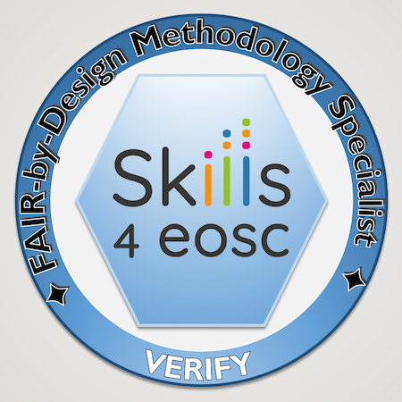

FAIR-by-Design Methodology for Learning Materials Training of Trainers
Release Notes
1.2.0 (2024-05-13)
- Enable global search throughout the whole content of the Git book.
- The autocomplete functionality offers suggestions while writing the search terms.
- Matching terms are highlighted on the results page, offering easier accessibility.
- Add a new Cheatsheet subsection in Stage 4 – Team Collaboration describing what repository actions need to be taken when and by whom.
- Add a new section on Syncing Changes from the Templates Repository to the Fork in Stage 4 – Team Collaboration, describing the process in which forked repositories can benefit from the latest improvements made to the
templateseven after forking. - Minor content fixes - typos and linking between pages.
1.1.0 (2024-02-27)
- Add support for FAIR Signposting Profile level 1.
- Update badge images to reflect the new badge design.
- Add support for a
RELEASE_NOTES.mdfile which lists changes between different versions and is embedded on the landing page (syllabus). - Extend the section on Working with Git Books and Key Takeaways with an additional step, describing how to change the title of the Git book appearing in the header of the webpage.
- Extend the section on Markdown Syntax within the Produce stage with step by step instructions on how to embed videos in the Git book.
- Extend the section on Publishing Preparations within the Publish stage to include instructions on how the new
RELEASE_NOTES.mdfile should be edited. - Extend the section on Zenodo Publishing within the Publish stage to reflect the additional automated workflow created to deal with specific Signposting aspects.
1.0.1 (2023-11-01)
- Improvements to the Zenodo automated publishing workflows, reflecting changes made to the Zenodo API.
1.0.0 (2023-10-17)
- Initial release of the materials.
Webinar
Date/Time: 17-19 October 2023
...as the live training session has ended, we invite you to take a look at the recordings available on the BBB room link...
Location
Training Description
The main goal of this ToT is to provide guidance and instructions on how to use the proposed FAIR-by-Design Methodology for development of FAIR learning materials in practice. The training will take you through all steps in the methodology and showcase their implementation using practical examples and developed templates.

Target audience
All Skills4EOSC project members that will need to develop learning materials for any type of project-related training.
Expertise Level / Skill Level: Beginner
Primary Language: English
Access Cost: No
Prerequisites
No prior knowledge is required to follow the training, however see Resources and Materials to prepare beforehand
Duration
The training will take place in the course of three days in the full day + full day + half day format. The total length of the training is ~18 hours.
Learning Objectives
- Define FAIR learning objects
- Adapt and mix FAIR learning objects
- Identify licenses and attribute correspondingly
- Structure comprehensive learning materials
- Manage file formats and tools
- Define metadata using a schema
- Create and publish FAIR-by-Design learning materials
- Collaborate with other instructors
- Assess FAIR-ness of existing learning objects
Keywords
FAIR, learning objects, methodology, practical implementation
Agenda: Training Schedule - Training Structure
Note: start time is given in CEST
Day 1: FAIR-by-Design Preparation, Discovery & Design
| Start | Stage | Topic | Duration |
|---|---|---|---|
| 9:00 | Introduction | 30 mins | |
| 9:30 | Prepare | FAIR skills & principles | 35 mins |
| 10:05 | = coffee break = | 15 mins | |
| 10:20 | Prepare | Defining FAIR learning objects | 60 mins |
| 11:20 | = coffee break = | 15 mins | |
| 11:35 | Discover | Discovering existing learning materials | 60 mins |
| 12:35 | = Lunch break = | 60 mins | |
| 13:35 | Design | Conceptualisation | 35 mins |
| 14:10 | Design | Hierarchical Structure | 40 mins |
| 14:50 | = coffee break = | 15 mins | |
| 15:05 | Design | Learning Unit Development | 45 mins |
| 15:50 | Design | Instruction Facilitation | 45 mins |
Day 2: Producing Learning Materials
| Start | Stage | Topic | Duration |
|---|---|---|---|
| 9:00 | Produce | Development Tools | 120 mins |
| 11:00 | = coffee break = | 15 mins | |
| 11:15 | Produce | Content Development | 75 mins |
| 12:30 | = Lunch break = | 60 mins | |
| 13:30 | Produce | Content Mix | 55 mins |
| 14:25 | Produce | Content Mix Slide Deck | 30 mins |
| 14:55 | Produce | Accessibility | 55 mins |
| 15:50 | = coffee break = | 15 mins | |
| 16:05 | Produce | Content Finalisation | 25 mins |
| 16:30 | Produce | Internal Quality Assurance | 20 mins |
| 16:50 | Produce | Team collaboration | 15 mins |
| 17:05 | Produce | Alternative approach | 20 mins |
Day 3: Publish & Verify FAIR-by-Design Learning Materials
| Start | Stage | Topic | Duration |
|---|---|---|---|
| 9:00 | Publish | Publishing Preparations | 35 mins |
| 9:35 | Publish | Publishing in Zenodo | 55 mins |
| 10:30 | = coffee break = | 15 mins | |
| 10:45 | Publish | Publish on LMS | 35 mins |
| 11:20 | Verify | QA & FAIR verification | 40 mins |
| 12:00 | Continuous Improvement | 30 mins |
Resources and Materials
All training resources will be available on the FAIR-by-Design methodology course on the learning platform. You will need to self-enrol in the course to gain access to the materials. Additional equipment and software needed to take full advantage of the training activities:
- Headset with microphone
- GitHub account: GitHub SignUp
- Zenodo account: Zenodo SignUp
- Installed Git client: Git Editor
- Installed MD editor: Obsidian
- or you can also use an online demo version such as https://demo.hedgedoc.org/ (for testing purposes only)
Certification Information (Digital Open Badges and Microcredentials)
The trainees that will pass the completion criteria for each separate stage of the FAIR-by-Design methodology will be awarded with corresponding open digital badges. All trainees that will successfully complete all activities available on the course on the learning platform will be able to obtain the higher level “FAIR Instructor” open digital badge.
| Badge | Name | Criteria |
|---|---|---|
| FAIR Instructor | Complete the full course FAIR-by-Design Learning Materials Methodology with minimum grade of 80% | |
|  | FAIR-by-Design Instructor - Prepare | Complete ALL of: Webinar recording, Stage 01 - Prepare Materials including Assessments |
| FAIR-by-Design Instructor - Discover | Complete ALL of: Webinar recording, Stage 02 - Discover Materials including Assessments | |
|  | FAIR-by-Design Instructor - Design | Complete ALL of: Webinar recording, Stage 03 - Design Materials including Assessments |
|  | FAIR-by-Design Instructor - Produce | Complete ALL of: Webinar recording, Stage 04 - Produce Materials including Assessments |
|  | FAIR-by-Design Instructor - Publish | Complete ALL of: Webinar recording, Stage 05 - Publish Materials including Assessments |
|  | FAIR-by-Design Instructor - Verify + CI | Complete ALL of: Webinar recording, Stage 06 - Verify & CI Materials including Assessments |
Authors
Sonja Filiposka, Dominique Green, Anastas Mishev, Vojdan Kjorveziroski, Andrea Corleto, Eleornora Napolitano, Gabriella Paolini, Sara di Giorgio, Joanna Janik, Luca Schirru, Arnaud Gingold, Christine Chardosek, Irakleitos Souyioultzoglou, Carolin Leister, Emma Lazzeri
Trainers
Sonja Filiposka  , Anastas Mishev , Vojdan Kjorveziroski
, Anastas Mishev , Vojdan Kjorveziroski
Contact information
For more information regarding the training please contact the T2.3 FAIR-by-Design Methodology Task Leader Sonja Filiposka using sonja.filiposka@finki.ukim.mk.
License

This work is licensed under a Creative Commons Attribution 4.0 International License.
DOI
https://doi.org/10.5281/zenodo.11186654
Accessibility Mission
Skills4EOSC is dedicated to ensuring that all produced learning materials are accessible to as many visitors as possible regardless of their ability or technology. We have an active commitment to increasing our learning materials accessibility. The main standards that we aim to comply with are WCAG v.2.1 Level AA criteria and PDF/UA (ISO 14289).
Acknowledgement
These learning materials have been developed by following the FAIR-by-Design Methodology.